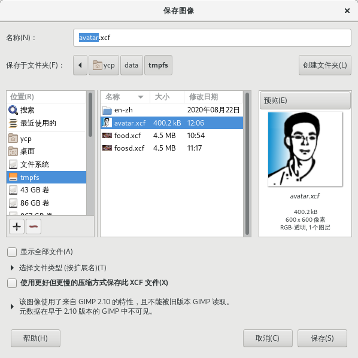

文件→保存

快捷键：Ctrl+S
此命令可以把当前图像保存到硬盘上。
此命令只能把图像保存为XCF格式。
提示
驿窗注：XCF {eXperimental Computing Facility} 是GIMP的原生格式，适合保存需要继续编辑的图像文件。
XCF格式有一个特性是低版本可以向高版本兼容。例如，GIMP 2.0能够把文字作为文字图层保存，可编辑文字属性，而GIMP 1.2不能，但GIMP 1.2可以把GIMP 2.0保存的XCF文件中的文字图层当作图像图层处理。
GIMP开发者不推荐使用XCF作为交换格式，因为XCF格式在未来的版本中会有细微的调整。
(以上内容摘自维基百科/万维百科，有修改)
如果想把图像保存为其它格式，比如JPG、PNG、PDF等，请使用菜单文件→导出为命令。
提示
保存图像 对话框下面的选择文件类型(按扩展名)并不是保存成XCF以外的其它格式，而是对XCF格式选择一种压缩方式。
如果该图像之前已经被保存过，那么运行文件→保存时，GIMP会直接覆盖之前保存的图像，没有任何提示。
如果该图像之前没有保存过，那么运行文件→保存时会打开 保存图像 对话框。